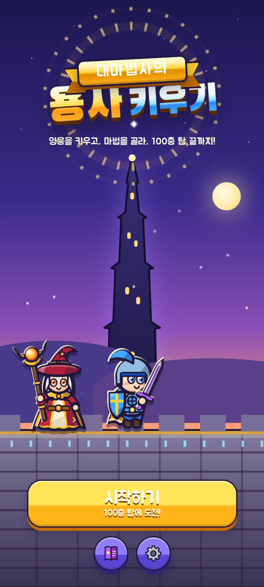
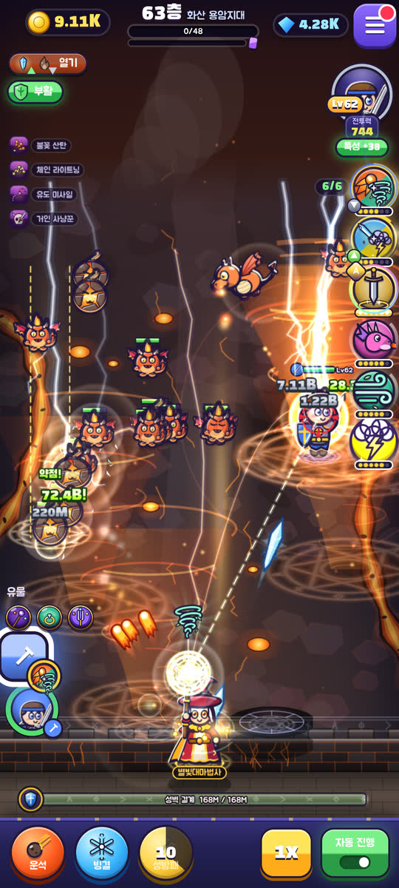
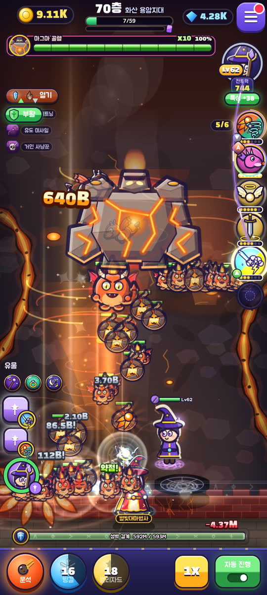
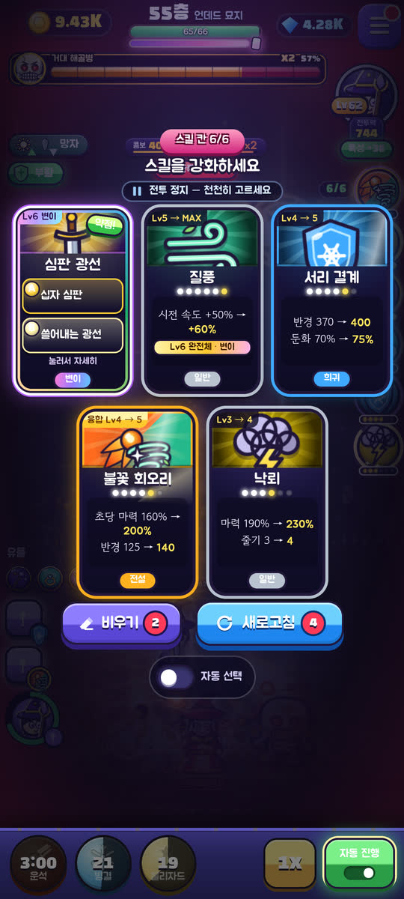
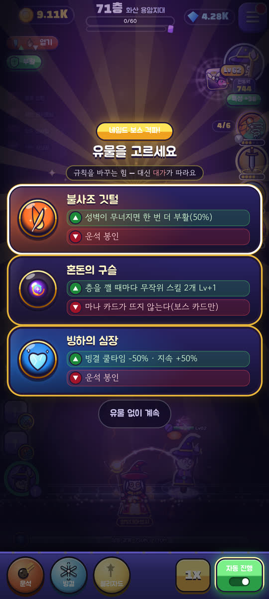
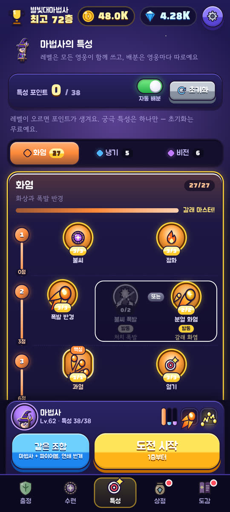
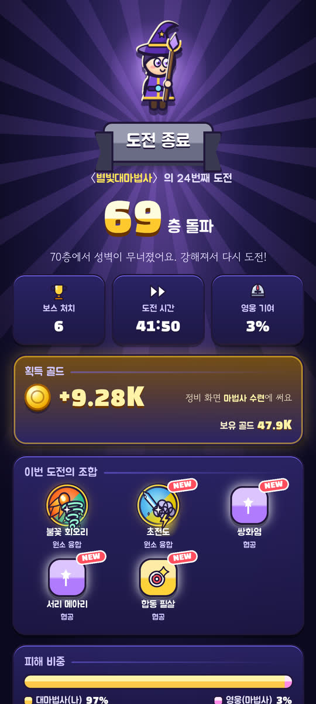

고른 주문만 쏟아붓는 대마법사
기본 주문은 견제일 뿐, 화력은 내가 고른 스킬 카드에서 나와요. 고른 스킬은 전투 화면 오른쪽 마법서 6칸에 쌓이고 Lv1부터 Lv6(MAX)까지 자랍니다. 레벨이 오를수록 연출도 커져서 Lv6은 스킬마다 완전체 이펙트가 터져요.
스킬 14종 · 6칸 · Lv6성벽 위 대마법사는 고른 주문만 퍼붓고,
영웅은 전장 한가운데를 누빈다. 100층 탑 끝까지!
iPhone·iPad는 웹앱으로 즐겨요 — 홈 화면에 추가하는 법
최신 버전
실제 게임 화면







게임 특징
기본 주문은 견제일 뿐, 화력은 내가 고른 스킬 카드에서 나와요. 고른 스킬은 전투 화면 오른쪽 마법서 6칸에 쌓이고 Lv1부터 Lv6(MAX)까지 자랍니다. 레벨이 오를수록 연출도 커져서 Lv6은 스킬마다 완전체 이펙트가 터져요.
스킬 14종 · 6칸 · Lv6재료 두 스킬을 모두 Lv6까지 찍으면 융합 스킬 Lv1로 합체하고 칸이 열려요. 파이어볼 + 회오리 → 불꽃 회오리. 조합은 숨겨져 있어요.
히든 융합 8종Lv6이 된 스킬은 작동 방식이 바뀌는 두 갈래 중 하나로 변이해요. 분열 화염구냐, 태양 구체냐.
변이 44종네임드 보스를 잡으면 규칙을 비트는 유물 3개 중 1개. 장점엔 늘 대가가 붙어요. 막힌 빌드는 망각으로 스킬을 비워 칸을 엽니다.
유물 20종기사·궁수·마법사, 20층에 성직자, 40층에 암살자. 영웅은 스스로 전장을 누비고, 탭하면 그 자리로 달려가요. 클래스마다 3갈래 특성 트리, 궁극 특성은 하나만.
5클래스 · 궁극 특성 15종영웅 클래스와 보유 스킬이 맞물리면 숨은 협공이 켜져요. 영웅 궁극기 직후 3초 안의 첫 스킬은 합동 필살 — 위력 2배에 슬로 모션.
히든 협공 15종슬라임 초원의 들불, 고블린 동굴의 어둠, 언데드 묘지의 망자, 화산의 열기, 마왕성의 광기. 지역마다 약점·내성이 달라 카드에 약점! 배지가 붙어요.
20층마다 새 지역10층마다 킹 슬라임, 고블린 전차, 리치 로드, 마그마 골렘, 심연의 마왕… 그리고 100층의 종말의 드래곤.
100층 · 보스 10회번 골드와 보석은 마법사 수련, 장비 상자, 보석 강화, 유물 해금, 출정 준비에. 만렙 뒤엔 끝없는 돌파로 재화가 남지 않아요.
영구 성장카드는 늘 직접 고르고(원하면 자동 선택), 자동 진행이 다음 층·궁극기·비상 스킬을 맡아요. 배속은 10층 2배, 30층 3배 해금.
방치 보상 최대 8시간갤럭시 Z 폴드 안쪽·바깥 화면 모두 꽉 차게, 접고 펼쳐도 끊김 없이 재배치. 새 버전은 앱이 알아서 받아 와요.
폴더블 · 태블릿 지원설치 방법
iPhone·iPad는 웹앱으로 설치해요. 홈 화면 아이콘으로 열면 주소창 없이 전체 화면, 오프라인에서도 돌아가요.
바로 플레이를 눌러 게임 화면으로 간 뒤, 아래 도구 막대의 공유 를 눌러요. 공유 버튼이 안 보이면 ⋯ → 공유.
공유 메뉴를 아래로 내려 홈 화면에 추가를 눌러요. 목록에 없으면 맨 아래 작업 편집에서 켤 수 있어요.
웹 앱으로 열기가 보이면 켜 둔 채로 추가. 이제 홈 화면의 용사 키우기 아이콘으로 열면 돼요.
Chrome for iOS에서도 공유 → 홈 화면에 추가가 되지만(iOS 16.4 이상), Safari가 가장 확실해요. App Store 앱은 따로 없어요.
APK 설치를 추천해요. 앱이 새 버전을 스스로 확인하고, 전투가 끝난 안전한 순간에 업데이트를 제안해요.
APK 다운로드를 누르고, 다운로드가 끝나면 알림이나 내 파일 → 다운로드에서 defense-game.apk를 열어요.
처음 한 번 설정으로 안내되면 방금 쓴 앱(Chrome·삼성 인터넷·내 파일)에서 이 출처 허용을 켜고 뒤로 돌아와요.
설치를 누르면 끝. Play 프로텍트 안내가 뜨면 세부정보 더보기 → 무시하고 설치를 눌러요(아래 서명 지문으로 진짜인지 확인할 수 있어요).
휴대폰 카메라로 찍어 보세요
이 페이지가 열리고, 기기에 맞는 설치 방법이 바로 나와요.
게임은 휴대폰 세로 화면에 맞춰 만들었어요. PC에선 브라우저로 바로 해 볼 수 있어요.
iPhone은 기본 카메라, Android는 카메라나 Google 렌즈로.
Android는 APK, iPhone은 홈 화면에 추가.
주소: seobuk.github.io/defense-game
안심하고 설치하세요
04:9D:93:9E:7D:5F:7D:3F:D8:1B:A1:BD:7E:D6:46:BC:F6:2E:DA:55:52:17:4B:B8:54:32:35:45:E0:CD:F1:D3
자주 묻는 질문
네, 완전 무료예요. 인앱 결제도 없어요. 골드와 보석은 게임 안에서만 벌어요.
없어요. 광고 SDK도, 추적도 없어요.
지금 쓰는 기기(브라우저) 안에만 저장돼요. 기기를 바꾸거나 웹앱 ↔ APK로 옮길 땐 설정 → 저장 백업의 백업 코드를 새 기기의 저장 복원에 붙여 넣으세요. 브라우저 데이터를 지우면 웹앱 기록도 지워지니 백업 코드를 꼭 챙겨 두세요.
네, 웹앱으로요. Safari에서 게임을 열고 공유 → 홈 화면에 추가하면 앱처럼 전체 화면으로 열리고 오프라인에서도 돌아가요. App Store 앱은 따로 없어요. 설치 방법 보기
Play 스토어 밖에서 받은 APK라서 나오는 일반 안내예요. 서명 지문과 GitHub 소스로 진짜인지 확인할 수 있어요.
저절로 돼요. APK는 앱이 GitHub Releases에서 새 버전을 확인해 전투가 끝난 순간(정비 화면·층 사이)에 설치를 제안하고, 웹앱은 타이틀·정비 화면에서 새로 고쳐 최신이 돼요.
준비 중이에요. 친구가 두 번째 마법사로 들어오는 협동 모드와 서버 계정이 예정돼 있어요. 처음 정한 닉네임은 나중에 계정과 이어질 수 있게 기기에 저장해 둬요.